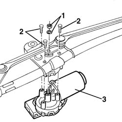
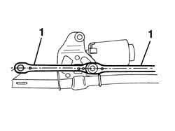

5050B42 windscreen wiper motor - r+r
- Path
- Procedures > 50 AUXILIARY UNITS > 5050 SCREEN WASHERS AND HEADLAMP WASH/WIPE > 5050B windscreen wash/wipe > 5050B42 windscreen wiper motor - r+r
- Kind
- repair procedure (removal / refitting; the operation number is the code)
- Applies to
- all engines; all production periods
- Interactive page
- https://sloeber94.github.io/elrnDB-a156/en/#/3238367
Applies to: all engines; all production periods
 Removing
Removing
 Refitting
Refitting5050B34 windscreen wiper arm/s complete with blade - r+r
7055A18 Windscreen base TRIM - R.R.
5050B38 windscreen wiper assembly - r+r or repair
1. Operating on the bench, unscrew the central nut.
2. Unscrew the motor fastening screws.
3. Remove the motor.

Applies to: all engines; all production periods
Refitting
RemovingCheck that the motor is not damaged and, if necessary, check its electric function.
Before reassembling the motor it is necessary to reset it connecting it temporarily to the connector and operating it through the front windsreen wiper control.
1. Reassemble the resetted motor, with wiper arms perfectly aligned.

Applies to: all engines; all production periods
Screw the motor fastening screws.
Screw the central nut.
5050B38 windscreen wiper assembly - r+r or repair
7055A18 Windscreen base TRIM - R.R.
5050B34 windscreen wiper arm/s complete with blade - r+r
Check the function of the windscreen wiper.
Topics linked from this page (3)
- 5050B34 windscreen wiper arm/s complete with blade - r+r
- 5050B38 windscreen wiper assembly - r+r or repair
- 7055A18 Windscreen base TRIM - R.R.